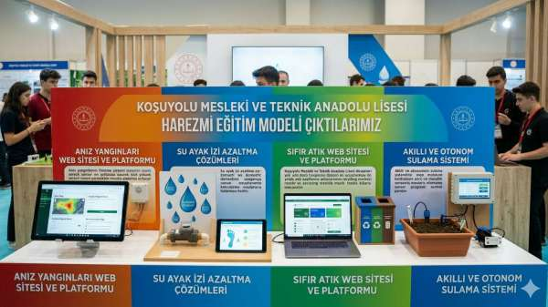
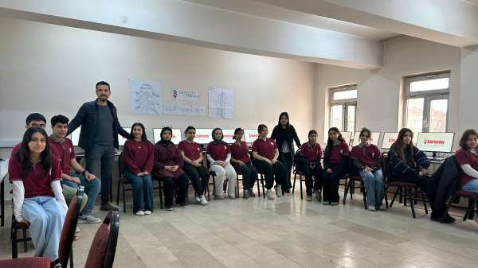
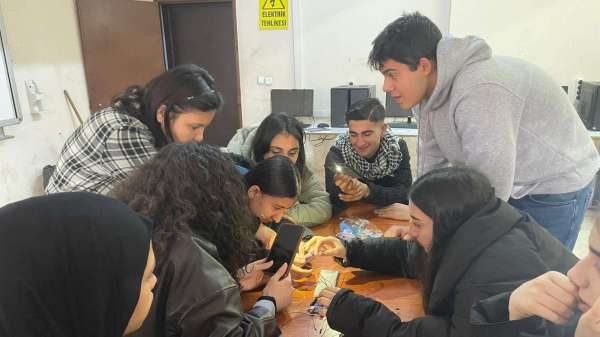
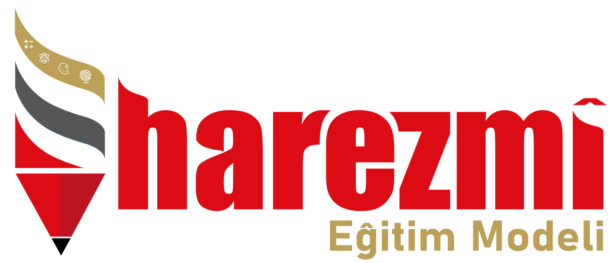

Koşuyolu Mesleki ve Teknik Anadolu Lisesi · 2025–2026
Su Tüketiminde
Farkındalık ve
Otonom Tasarruf Sistemleri
Hayatın içinden bir sorundan yola çıkarak geliştirilen dört disiplinlerarası web projesi. Sensör teknolojisi, Python programlama ve toplumsal farkındalık bir arada.
"Musluklar açık kaldığında hem faturam yükseliyor hem de doğa zarar görüyor; ben de bunu durdurmak istiyorum."
Öğrenci Projeleri
Dört Web Sayfası,
Bir Amaç
11. sınıf öğrencilerimizin Harezmi süreci boyunca geliştirdiği dört bağımsız web sayfasını aşağıdan ziyaret edebilirsiniz.
Akıllı Sulama Sistemi
Toprak nem sensörleri ile çalışan otonom sulama prototipinin tasarım süreci, devre şeması ve karşılaştırmalı ölçüm sonuçları.
Su Ayak İzi Hesaplayıcısı
Python ile geliştirilen kişisel su tüketim analiz uygulaması; günlük aktivite verileri, grafik çıktılar ve bireysel tasarruf önerileri.
Anız Yangınları ve Çevre Kirliliği
Tarım arazilerindeki anız yakma pratiğinin ekosisteme, su kaynaklarına ve insan sağlığına verdiği zararları anlatan bilgilendirme sitesi.
Sıfır Atık Seferberliği
Türkiye BM Sürdürülebilir Kalkınma Amacı 6 bağlamında Sıfır Atık seferberliği ilan etmiştir.
Sürecimizi
Sizinle Paylaşıyoruz
Problem tespitinden prototip geliştirmeye, Python kodlamadan saha testlerine uzanan tüm Harezmi sürecimizi anlatan belgesel niteliğindeki proje videomuzu izleyebilirsiniz.
Fotoğraf Galerisi
Süreçten Kareler
Sergi standımızdan sınıf çalışmalarımıza, devre kurulumundan ekip toplantılarına — Harezmi yolculuğumuzdan anlık görüntüler.




Türkiye Yüzyılı Maarif Modeli
Koşuyolu Mesleki ve Teknik Anadolu Lisesi
Diyarbakır / Bağlar · 11. Sınıf · 20 Öğrenci
Ekip: Engin Çetin · Mustafa Kaçmaz
Seda Coşkun Eliküçük · Uğur Aktaş
İl Koordinatörü: Nevzat Can
Modelin Dört Temel İlkesi
Türkiye, yılda kişi başına yaklaşık 1.313 m³ kullanılabilir su ile uluslararası su stresi sınırında yer almaktadır. 2025 su yılı, son yarım yüzyılın en kurak yılı olarak kayıtlara geçmiştir.
Dicle–Fırat havzasındaki bu okulda yürütülen proje, hem yerel su ekosistemlerine duyarlılığı hem de Türkiye'nin mavi-yeşil vatan mirasını koruma sorumluluğunu taşımaktadır.
oranı
artışı
kullanılabilir su